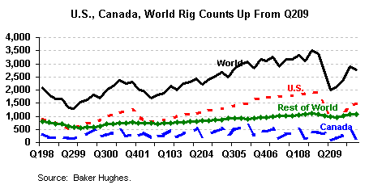

- U.S. oil rig counts increased by 174 percent in Q210 over the year-ago quarter to an average of 536 rigs, while U.S. gas rig counts increased 31 percent to an average of 957 rigs.
| Second Quarter 2010 Key Findings | |||
|---|---|---|---|
| Net Income: | $3.4 billion | Revenues: | $28.4 billion |
|
|||
Net Income for Independent Energy Companies: (back to top)
- Net income for oil and gas producers and oilfield companies combined, rebounded to $3.4 billion in the second quarter of 2010 (Q210) compared to $1.9 billion in Q209. This was driven by the large turnaround in oil and gas producer earnings, which reached their highest Q2 level over 2005-2010; this in turn was largely a result of the price increases in crude oil (28 percent) and natural gas (17 percent)
- Oilfield company net income increased 12 percent from Q209, to $2.5 billion, but remained below the Q2 average over 2005-2009.
Revenues for Independent Energy Companies: (back to top)
- Q210 revenue for oil and gas producers and oilfield companies combined increased by 12.0 percent above year ago levels and was 8.3 percent above the second-quarter average over 2005-2009.
- Oil and gas producer revenue increased 55 percent in Q210 from the year-ago quarter, to a level 47 percent above the second-quarter average over 2005-2009.
- Oilfield company revenue increased 6.7 percent in Q210 to a level 3.5 percent above the second-quarter average over 2005-2009.
Ethanol Producer Second Quarter 2010 Revenue and Net Income: (back to top)
- Revenue and income for ethanol producers in this report both increased in Q210 from the year-ago quarter: revenue was up 4.9 percent to $1.2 billion in Q210, while net income went from losses of $12 million to earnings of $29 million in Q210.
- This occurred despite a modest drop in ethanol prices in Q210 to $1.57 per gallon, as initial losses from start-up costs for many new ethanol companies began to diminish.
Supplemental Figures: (back to top)

- The U.S. total rig count increased by 61 percent to 1,508 in Q210, pushing world totals to increase 38 percent.
- Crude oil prices in Q210 were 28 percent higher than in Q209 and 3 percent higher than the average for the second quarter of 2005-2009 (in Q210 dollars).
- Natural gas prices of Q210 were 17 percent higher than in Q209, but 41 percent lower than the second-quarter average for 2005-2009 (measured in Q210 dollars).
- Ethanol prices dropped slightly in Q210 to their lowest second-quarter level over 2007-2010.
Supplemental Tables: (back to top)
| Table 1. Revenue and Net Income Summaries for Independent Energy Companies | ||||||
|---|---|---|---|---|---|---|
| Companies | Q209 | Q210 | Percent Change |
First Half 2009 |
First Half 2010 |
Percent Change |
| Revenue | (Million Q210 Dollars)a | (Million Q210 Dollars)a | ||||
| Oil and Gas Producers (15)b | 2,644 | 4,130 | 55.1 | 5,488 | 8,553 | 55.9 |
| Oilfield Companies (17) | 21,583 | 23,021 | 6.7 | 45,233 | 44,237 | -2.2 |
| Ethanol Producers (13) | 1,182 | 1,240 | 4.9 | 2,372 | 2,591 | 9.2 |
| Total Revenue (45) | 25,428 | 28,392 | 11.7 | 53,094 | 55,381 | 4.3 |
| Net Income | ||||||
| Oil and Gas Producers (15) | -313 | 869 | 377.4 | -2,996 | 2,103 | 170.2 |
| Oilfield Companies (17) | 2,251 | 2,516 | 11.8 | 5,763 | 5,008 | -13.1 |
| Ethanol Producers (13) | -12 | 29 | 354.2 | -77 | 93 | 221.0 |
| Total Income (45) | 1,927 | 3,415 | 77.2 | 2,690 | 7,204 | 167.8 |
| a Values have been converted to constant Q210 dollars using the GDP price deflator series. | ||||||
| b The number of companies reporting revenue and net income is in parentheses. | ||||||
| Notes: Percentages are calculated from unrounded data. | ||||||
| Sources: Compiled from companies' quarterly reports to stockholders. | ||||||
| Table 2. U.S. Energy Prices | ||||||
|---|---|---|---|---|---|---|
| Q209 | Q210 | Percent Change |
||||
| U.S. Energy Prices | (Q210 Dollars) |
|||||
| Imported Crude Oil Price ($/barrel)a | 57.99 | 74.33 | 28.2 | |||
| Natural Gas Wellhead Price ($/thousand cubic feet)a | 3.47 | 4.07 | 17.3 | |||
| Ethanol Midcontinent Spot Price ($/barrel)b | 1.72 | 1.57 | -9.0 | |||
| a Energy Information Administration, Short-Term Energy Outlook, (September 8, 2010), Table 2. | ||||||
| b Compiled from Reuters data. | ||||||
To be automatically notified via e-mail of updates to this report and to other Energy Finance products, go to the list-serve sign-up page, enter your e-mail address, select the box beside "Financial and Industry Analysis," and then press "subscribe." You will then be notified within an hour of any updates.